是什么让事件变得不可预测？我们在前面的章节讨论了有关概率的概念。概率论的核心思想是，有些现象是随机的，因为它们是不确定的，所以不能准确预测。将各种现实世界的现象（如骰子的滚动）作为随机现象建模的方法是合理并高效的。
但是，骰子的滚动真的是随机的吗？或许如果我们知道每一个关于骰子的细节——从旋转速度到房间里的气流，再到它所落下的表面的摩擦系数——我们可以确定骰子的哪一面会朝上。也许骰子的滚动不是随机的，只是很难对此进行判定。
什么事件是随机的？物理学家告诉我们，一些物理现象确实是随机的，这是量子力学的核心原则。电子和光子等微小粒子的行为无法被预测，因为随机性是它们运转的基础。
其他的物理、生物和社会现象都可以用概率论很好地进行建模，这真是太棒了。但它们是随机的吗？也许它们非常复杂。
这引领我们进入本章的问题：一个非常简单、拥有绝对确定性的系统，可能完全不可预测吗？
本章中讨论的概念是函数迭代。迭代（iteration）意味着反复做同样的事情。让我们回顾一下数学家对函数的定义。
函数被认为是将一个数字转换成另一个数字的“黑匣子”。我们想象这个匣子有一个输入槽，我们插入数字，转动曲柄使匣子工作，一个结果便输出出来。
我们只考虑了把数字转换成数字的功能。函数可以将各种数学对象转换为其他数学对象。
例如，想象一个可以执行以下操作的匣子。它接受数字，将其平方后加1，然后得出结果。让我们给这个函数取一个名字，我们称之为“平方后加1”函数。以下是它接受3的工作流程：
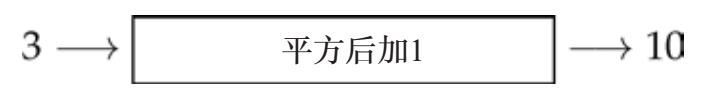
用文字描述函数的功能是麻烦的，用数学符号来表示会更清晰。对于数字3，我们首先将它平方（所以3变成32=3×3），然后加1，得到32+1=10。我们在这个函数中插入数字4的结果是什么？我们得到42+1=17。
数学家倾向于使用单个字母来命名函数，而不是使用长名字（例如“平方后加1”），而且在大多数情况下我们选择的字母是f。为了显示f在一个数字上的作用，我们把这个数字放在函数名后面的括号中，像这样：f（4）。
用这种表示法，我们得出一个简便的方法编写能精确定义这个函数的规则。
f（x）=x2+1
这表明，对于给定的数字x，将函数f应用到该数字的结果是x2+1。
另一个例子是，定义一个新的函数g
g（x）=1+x+x2
g（3）是多少？我们在g的定义中用3代替x来得到这个计算结果：
g（3）=1+3+32=1+3+9=13
通过进行一个接一个的运算，我们可以将函数进行组合。让我们梳理一下f（g（2））的定义（使用我们刚刚定义的f和g）。
这个表达式要求我们从其他函数中计算出f。从什么函数里呢？我们从g（2）中计算f值。g（2）是多少？根据g的定义，它是1+2+22=1+2+4=7。我们现在根据g计算f：f（7）=72+1=50。合并得
f（g（2））=f（7）=50
现在请通过计算g（f（2））来检验你是否理解了。答案不是50。你可以在[f]找到答案。
让我们回到迭代的概念。如前所述，迭代就是一遍又一遍地重复同样的事情。再说一遍：迭代就是一遍又一遍地重复同样的事情……（好，我希望你听明白了这个玩笑）。
让我们来思考函数f（x）=x2+1。标记f（f（x））意味着我们要做两次 f 的运算：取数字x，应用函数 f 得到结果，然后把结果应用到f得到最终的答案。举例如下：
f（f（2））=f（22+1）=f（5）=52+1=26
我们可以迭代两次以上。这里我们迭代三次：
f（f（f（2））=f（f（5））=f（26）
=262+1=677
当我们重复函数三次以上时，很难读出这个标记。因此，我们写成 f 4（x），而不是f（f（f（f（x）））），需要明白的是这里的指数并不意味着重复乘法，而是重复函数应用。对于正整数n，符号f n（x）表示：
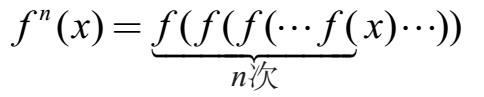
在本节中，我们计算形式为f（x）=mx（1–x）的函数的迭代，其中m是一个特定的数字。这个函数族被称为逻辑映射（logistic maps）。在所有情况下，我们都从x=0.1开始，进行函数迭代，看看会发生什么。
“映射”是函数的同义词。
我们从下面这个函数开始：
f（x）=2.5x（1–x）
从x=0.1开始，我们先计算
f（0.1）=2.5×0.1×（1–0.1）=2.5×0.1×0.9=0.225
我们再次应用f：
f 2（0.1）=f（0.225） =2.5×0.225×（1–0.225）
=2.5×0.225×0.775
=0.4359375
让我们借助一下电脑，编写一个程序来计算f的迭代，得到以下结果：
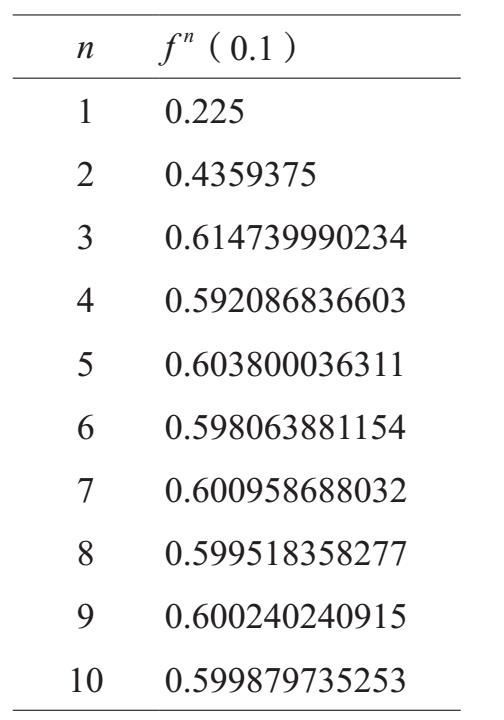
注意，连续迭代越来越接近0.6。有一个很好的方式对其进行可视化操作。我们用图表表示0.1，f（0.1）, f（f（0.1））等的值。横轴表示迭代次数n。在每一步，我们绘制一个显示f n（0.1）值的点。（“第0次”迭代是起始值，为0.1。）然后我们用线段连接这些点，使得图案更清晰。结果如下：
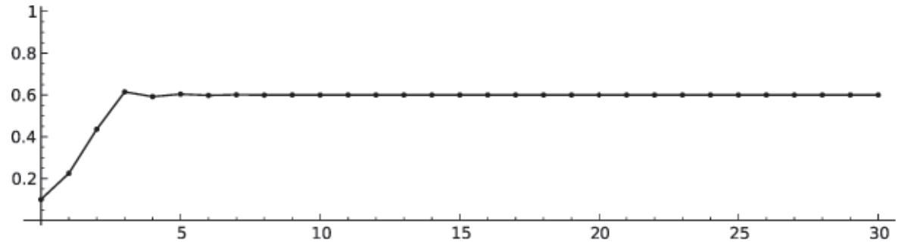
我们所看到的是 f 的迭代收敛于0.6。
0.6有什么特别之处？注意
f（0.6）=2.5×0.6×（1–0.6）=2.5×0.6×0.4=0.6
数值0.6称为f的一个不动点，因为通过函数f运行该数值并不会令它发生改变：f（0.6）=0.6。
让我们用另一个混沌序列重复这个实验。这次我们把乘数改为2.8。现在函数是f（x）=2.8x（1–x）。和前面的情况一样，我们从x=0.1开始迭代。下一页最上面的图是前十次结果：
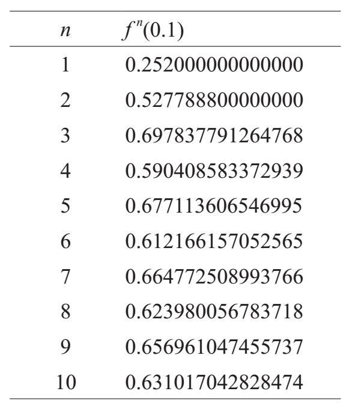
看起来迭代在0.64附近徘徊。让我们运行下一步的迭代并将结果用图表表示：
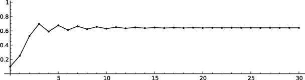
在十次迭代的标记中，数值仍然是上下浮动，但是当我们运行到第30次迭代时，它们已经稳定下来了。那个值是多少？它是一个介于0和1之间的数字，其性质为f（x）=x。我们可以解出这个方程：
f （x）=x
2.8x（1–x）=x 两边除以x
2.8（1–x）=1
2.8–2.8x=1
1.8=2.8x
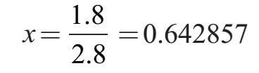
f（x）=2.8x（1–x）的迭代收敛至0.642857。
逻辑映射的迭代f（x）=mx（1–x）可以被看作是一个简单的演化系统。数字x表示系统的状态，函数f表示系统如何从一个步骤演化到下一个步骤。在我们考虑过的两种情况中（m=2.5和m=2.8），系统的长期行为是在函数的一个不动点上稳定，进入一种“平衡”。
数学家把这些动力系统（dynamical systems）称为：具有初始状态，并根据转换规则进行状态转变的系统。
我们继续用m=3.2探索逻辑映射的迭代。和之前一样，我们从x=0.1开始。下面是迭代后的值：
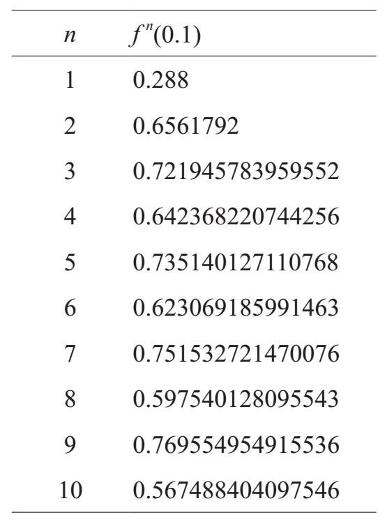
这是怎么回事？迭代似乎没有稳定下来。事实上，如果我们看到偶数步骤，数值越来越小（约为0.66，0.64，0.62，0.6，0.57），而在奇数步骤数值越来越大（约为0.72，0.74，0.75，0.77）。数值不是越来越靠拢，而是越来越疏离！
让我们绘制前30次迭代，观察这个系统的结果：
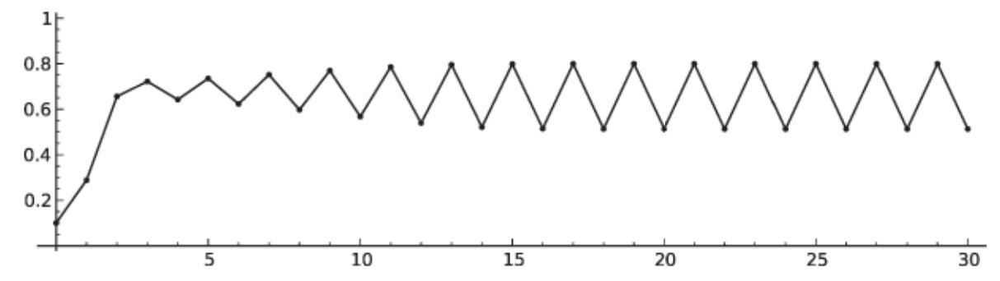
看哪！系统没有“稳定”到一个单一的值，而是在两个数字之间振荡。让我们一直运算至第50次迭代。以下是图表的最后几行：
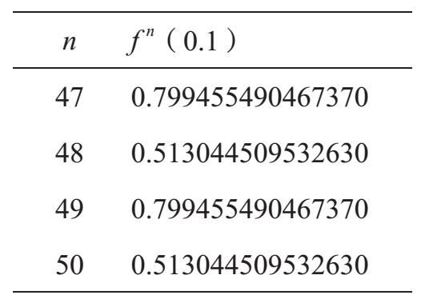
该系统的长期行为是在两个值之间振荡，s=0.799455…和t=0.5130445…。数字的性质是f （s）=t和f（t）=s。振荡模式见下图。
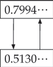
在逻辑映射的迭代中，我们还能观察到什么状态？下一站是m=3.52。让我们直接看f（x），f 2（x），f 3（x），…的迭代图。
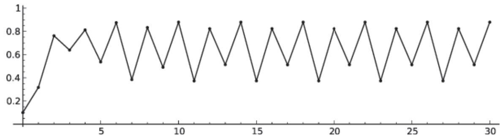
下面是值的图表：
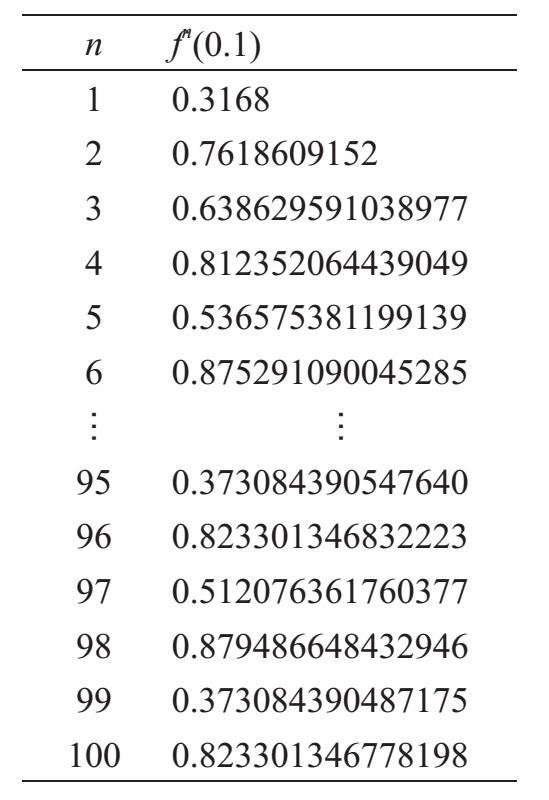
这个系统的长期状态是有趣且相当稳定的。系统逐步在四个不同的值间循环，循环往复以致无穷（ad infi nitu），如下图所示。
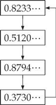
我们研究了一些逻辑函数f（x）=mx（1–x）迭代的长期状态。在所有情况下，迭代都稳定在一个平稳的模式。在某些情况下（m=2.5和m=2.8），系统将自身停止在一个单一的值上：函数 f 的一个固定点。在其他情况下（m=3.2和m=3.52），系统拥有一种稳定、可预测的节奏。
生活是美好的。我们知道起始值：x=0.1。我们知道从一个值到下一个值的规则：f（x）=mx（1–x）。当然，我们可以从现在开始，直到系统的状态进入永恒。是这样吗？
最后一个例子：m=3.9。让我们从计算机中获得前10次迭代：
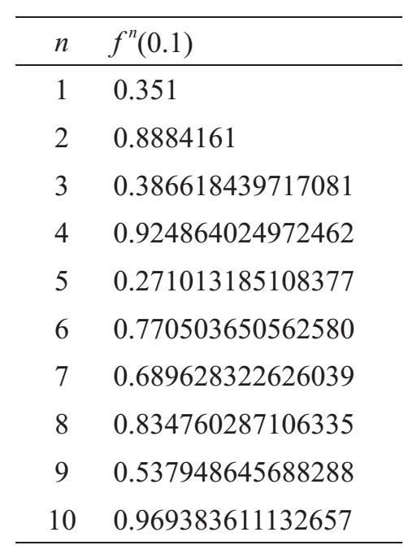
目前尚不清楚发生了什么。我们试着绘制前30个迭代。
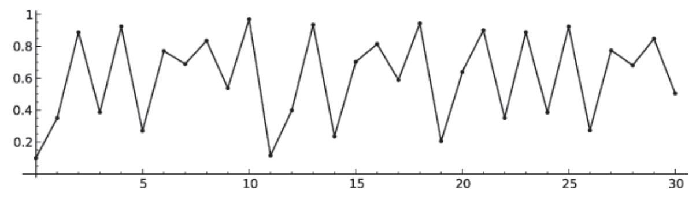
没有明显的模式。别担心。让我们再试一次，这一次运行到第100次迭代。
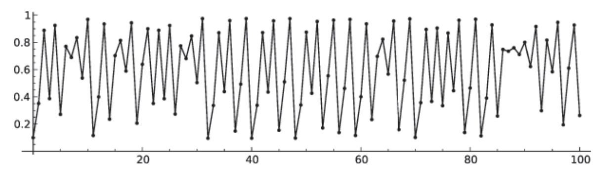
看起来是随机的。当然，它肯定不是！每个值都是由函数f（x）=3.9x（1–x）从前一个精确值计算而来的。这个逻辑映射的迭代从未“稳定”成一个精细的模式。这种不规则性会永远持续。
好吧。迭代不会变得有规律，但系统100%是可预测的。
●我们知道初始状态，x=0.1。
●我们知道从一个状态到下一个状态的转换规则：x→3.9x（1–x）。
这意味着我们可以，比如说第1000次迭代之后，精确地计算出系统的状态。是这样吗？
错。
我们受到两个问题的综合影响：舍入误差和对初始条件的敏感依赖。下面让我们依次进行讨论。
当我们在计算器或电脑上进行计算时，我们看到的结果往往是一个近似值。例如，当我们计算1÷3时，我们的设备将答案报告为小数0.3333333。正确答案有无限多的3，但计算器只保留少数几个数字。执行函数f（x）=3.9x（1–x）的若干次迭代之后，数字在小数点右边的十几个位置后消失。这意味着经过若干次迭代后，计算机会报告一个并不精确的答案：一个近似值。通常我们不太在意这样的错误。如果我们试图计算需要多少油漆来覆盖一定的墙面空间，计算器可能会报出一个舍去了万亿分之一的答案，这是无关紧要的。那为什么在上述情况下四舍五入的误差却很重要？
这给我们带来了下一个问题：对初始条件的敏感依赖。我们用两个不同的，但几乎相等的起始值计算函数的迭代：0.1和0.10001。直觉上，我们预计起始值的微小差异是微不足道的。是这样吗？见下表。
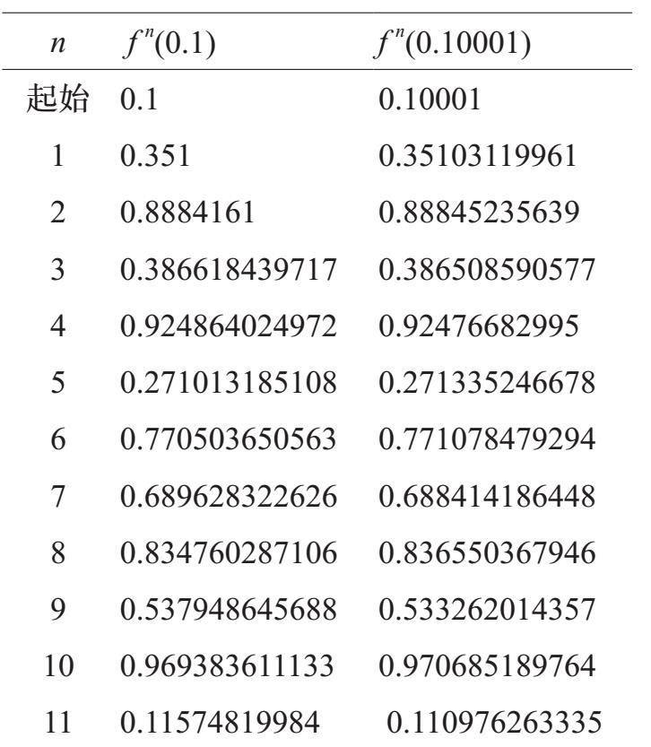
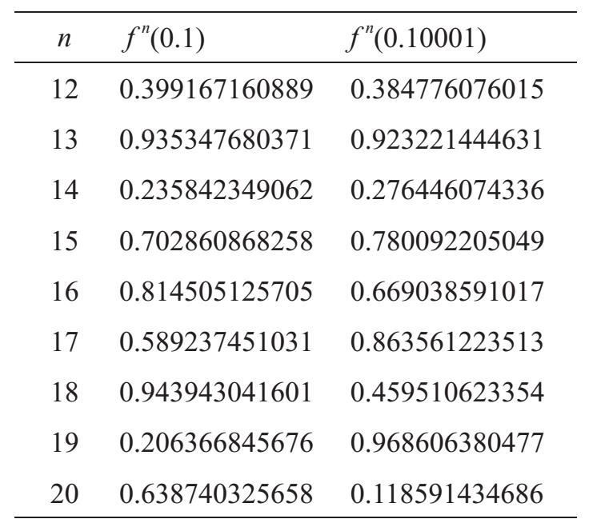
注意，对于前十几次迭代，从0.1开始的系统和从0.10001开始的系统几乎一致。然而之后，它们的后续轨迹是相当不同的。通过在同一个图上绘制两个演变图可以很好地说明这一点。实线是从0.1开始的系统，虚线是初始状态为0.10001的系统。
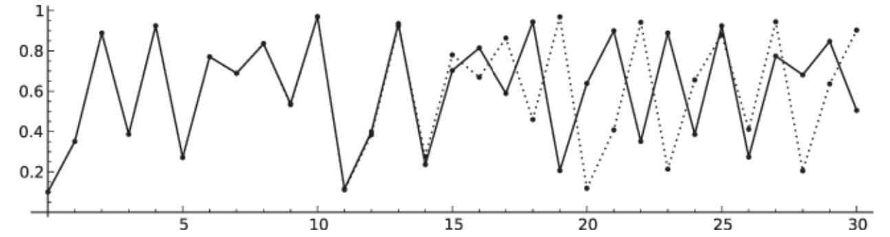
f1000（0.1）的值是多少？也就是说，如果我们从x=0.1开始执行1000次f（x）=3.9x（1–x）的迭代，结果是什么？
我们可以在电脑上做这个计算，但结果毫无意义。为了说明这个事实，我们使用不同的精度等级（计算机用于数字的位数）进行了三次计算，得到以下结果：
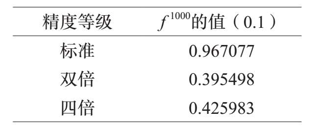
很可能这些都不是f 1000（0.1）的正确值。
最后的努力：计算机可以以任意准确度工作。也就是说，我们可以要求从一个迭代到下一个迭代都不四舍五入。但是当我们这样做的时候会发生什么：
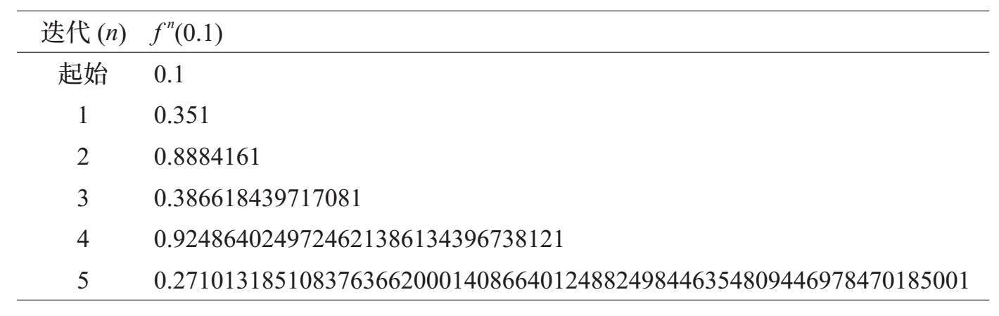
f 6（0.1）的确切值是127位数字，f 7（0.1）的确切值是255位数字。这个模式表示f n（0.1）的位数在每次迭代中大致加倍。没有足够容量的电脑来计算f 1000（0.1）。
这将我们引到了哪里？虽然我们知道系统的起始点以及从一个状态到另一个状态的规则，但我们无法弄清1000步之后的系统状态。可以证明f 1000（0.1）介于0和1之间，所以我们或许会问：f 1000（0.1）大于21 的概率是多少？
这个问题的答案是0或1，因为这里没有任何随机性。或者f 1000（0.1）＞
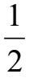
，或者f 1000（0.1）≤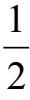
。没有可能，没有随机性。这个简单的系统是混乱的。它绝对是具有确定性并完全不可预测的。
有许多数学系统表现出混乱的状态，其中许多来自现实世界的模型，比如天气。
到目前为止，本章只考虑了逻辑映射的迭代。我们以一种相当不同的函数和一个棘手的、悬而未决的迭代问题结束本章。
逻辑映射是由一个简单的代数公式给出的函数。但是，函数还可以通过其他方式进行定义。我们现在考虑的函数F只是为正整数定义的，并由以下规则定义：
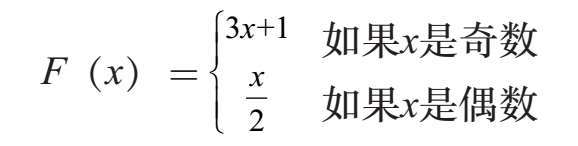
这个函数涉及两个简单的代数公式，但是我们调用的公式取决于x是偶数还是奇数。
举几个例子：
●F（9）=28。数字9是奇数，所以我们应用公式3x+1来计算3×9+1=28。
●F（10）=5。数字10是偶数，所以我们应用公式
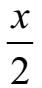
，得到10/2=5。当x是奇数时，F（x）是一个正整数。而且，当x是偶数时，等于
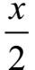
的F（x）也是正整数。简而言之：如果x是一个正整数，那么F（x）也是正整数。
这意味着我们可以迭代F，因为F的输出是F的有效输入。让我们来说明如果从x=12开始迭代，F会发生什么。
●F（12）=6，因为10是偶数。
●F2（12）=F（6）=3，因为6是偶数。
●F3（12）=F（3）=10，因为3是奇数，所以我们使用3x+1公式。
●F4（12）=F（10）=5。
这是一个简便的说明迭代的方式。我们写12→6表明将F应用到12的结果为6。现在我们可以跟踪F的迭代，如下：
12→6→3→10→5→16→8→4→2→1→4→2→1。
注意模式4→2→1重复。如果我们继续往下会怎样？由于F（1）=4，F（4）=2，F（2）=1，接下来的三项也是4，2和1。
换句话说，如果迭代序列到1，之后的模式将永远是4，2，1，4，2，1，4，2，1，…。
让我们尝试一个不同的起始值，比如9，我们得到：
9→28→14→7→22→11→34→17→52→26→1 3→40→20→10→5→16→8→4→2→1。
这里有一系列令人印象深刻的迭代：
27→82→41→124→62→31→94→4→142→71→214→107→322→161→484→242→121→364→1 82→91→274→137→412→206→103→310→155→466→233→700→350→175→526→263→790→395→1186→593→1780→890→445→1336→668→334→167→502→251→754→377→1132→566→283→850→425→1276→638→319→958→479→1438→719→2158→1079→3238→1619→4858→2429→7288→3644→1822→911→2734→1367→4102→2051→6154→3077→9232→4616→2308→1154→577→1732→866→433→1300→650→325→9767→488→244→122→61→184→92→46→23→70→35→106→53→160→80→40→20→10→5→16→8→4→2→1。
序列最终达到1，但需要超过100次迭代。
科拉茨3x+1猜想指出，无论初始正整数x是多少，迭代序列x→F（x）→F2（x）→F3（x）→最终达到1，然后的模式永远是4，2，1。
尽管这个问题受到专业和业余数学家们的广泛关注，但仍然没有得到证实。
[f]问题的答案：已知f（x）=x2+1且g（x）=1+x+x2，得
◥g（f(2)）=g（22+1）=g（5）=1+5+52=31。